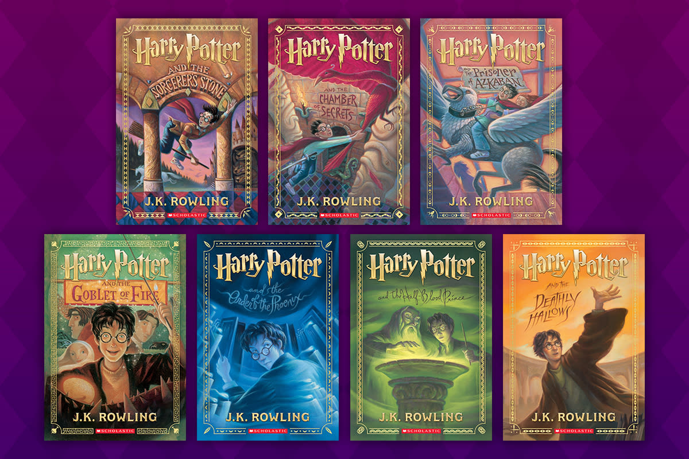
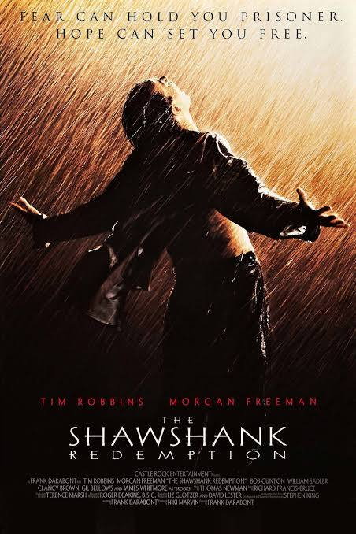

Book & Movie Recommendations
📚 Book Recommendations
- The Great Gatsby – F. Scott Fitzgerald
- War And Peace – Leo Tolstoy
- Harry Potter Series – J. K. Rowling
The Great Gatsby is a classic American novel that explores themes of wealth, love, and the American Dream during the Roaring Twenties. Set in the extravagant world of Long Island’s elite, the story follows Jay Gatsby, a mysterious millionaire who throws lavish parties in hopes of rekindling his lost love, Daisy Buchanan. Through the eyes of the novel’s narrator, Nick Carraway, Fitzgerald critiques the superficiality of high society and the disillusionment that often accompanies ambition and desire. The novel’s poetic prose, symbolic imagery, and tragic storyline make it a timeless reflection on human aspirations and the limits of material success.

War and Peace is a monumental historical novel that weaves together personal and political narratives set against the backdrop of Napoleon’s invasion of Russia. Tolstoy masterfully intertwines the lives of aristocratic families with grand historical events, exploring themes of fate, free will, and the impact of war on human lives. The novel is known for its detailed character development, philosophical reflections, and vivid battle scenes, making it one of the most significant works of world literature. Through characters like Pierre Bezukhov, Prince Andrei Bolkonsky, and Natasha Rostova, Tolstoy presents a sweeping and deeply human story of love, honor, and destiny.

The Harry Potter series is a beloved fantasy saga that follows the journey of Harry Potter, a young wizard destined to defeat the dark lord Voldemort. From his first encounter with the magical world at Hogwarts School of Witchcraft and Wizardry to the final battle between good and evil, Harry’s story is one of friendship, courage, and self-discovery. Rowling creates an immersive universe filled with enchanting creatures, powerful spells, and complex characters, making the series appealing to readers of all ages. Beyond the magic, the books explore deeper themes such as love, sacrifice, and the power of choices, solidifying their place as one of the most influential and cherished literary works of modern times.
🎬 Movie Recommendations
- The Shawshank Redemption (1994)
- The Lord of the Rings: The Return of the King (2003)
- 12 Angry Men (1957)
The Shawshank Redemption is a powerful drama that tells the story of Andy Dufresne, a banker who is wrongfully convicted of murder and sentenced to life in Shawshank Prison. Despite the harsh realities of prison life, Andy maintains his hope and determination, forming a deep friendship with fellow inmate Red. Through patience, intelligence, and an unbreakable spirit, he slowly transforms the prison and those around him. Directed by Frank Darabont and based on a novella by Stephen King, the film explores themes of hope, redemption, and the resilience of the human spirit, making it one of the most beloved films of all time.
The Lord of the Rings: The Return of the King is the epic conclusion to Peter Jackson’s adaptation of J.R.R. Tolkien’s legendary fantasy series. The film follows Frodo Baggins and Samwise Gamgee as they make their final journey to destroy the One Ring in Mount Doom, while Aragorn leads the forces of Middle-earth in a decisive battle against Sauron’s armies. With breathtaking visuals, thrilling action sequences, and deep emotional moments, the film masterfully brings the epic saga to a close. Winning 11 Academy Awards, including Best Picture, The Return of the King is widely regarded as one of the greatest fantasy films ever made, celebrating themes of friendship, courage, and the triumph of good over evil.

12 Angry Men is a gripping courtroom drama that takes place almost entirely in a single jury room, where twelve men must decide the fate of a young defendant accused of murder. Initially, nearly all jurors believe him to be guilty, but one dissenting juror, played by Henry Fonda, insists on carefully examining the evidence. As the intense debate unfolds, the film highlights themes of justice, prejudice, and the importance of critical thinking. Directed by Sidney Lumet, this thought-provoking film remains a timeless classic, demonstrating the power of reasoned argument and moral integrity in the pursuit of truth.